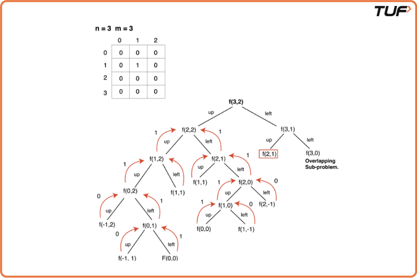
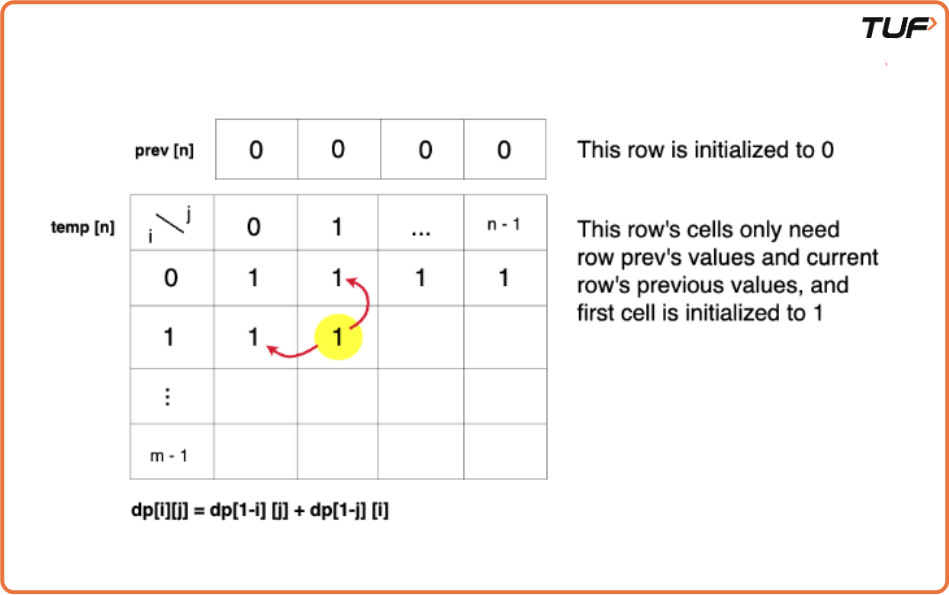
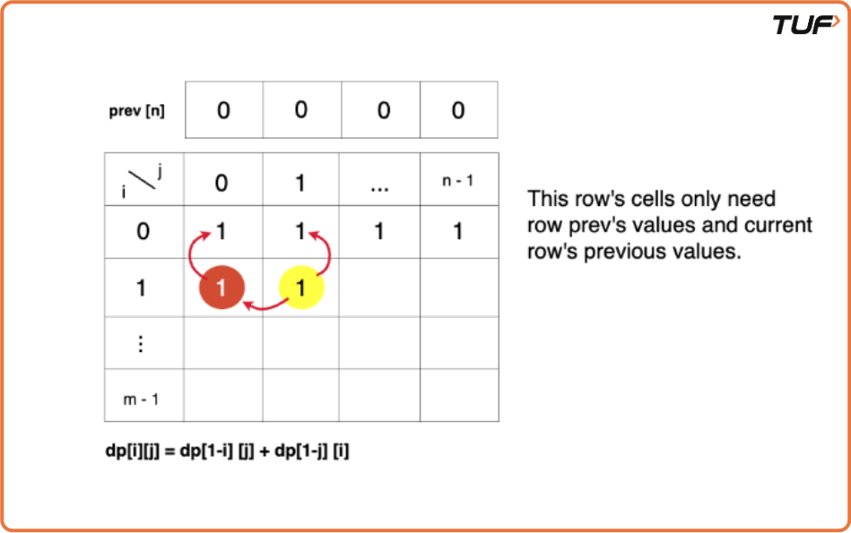

Grid Unique Paths 2 (DP 9)
Problem Statement:
Given an m x n 2d array named matrix, where each cell is either 0 or 1. Return the number of unique ways to go from the top-left cell (matrix[0][0]) to the bottom-right cell (matrix[m-1][n-1]). A cell is blocked if its value is 1, and no path is possible through that cell.
Movement is allowed in only two directions from a cell - right and bottom.
Examples
Example 1: Input: matrix = [[0, 0, 0], [0, 1, 0], [0, 0, 0]] Output: 2 Explanation: The two possible paths to reach the bottom-right cell are: 1) down → down → right → right 2) right → right → down → down Thus, the number of paths is 2. Example 2: Input: matrix = [[0, 0, 0], [0, 0, 1], [0, 1, 0]] Output: 0 Explanation: There is no valid path to reach the bottom-right cell due to blocked cells (represented by 1).
Disclaimer: Here is the practice link to help you assess your knowledge better. It's highly recommend trying to solve it before looking at the solution.
Memoization Approach
Algorithm
- Declare a
dp[]array of size[m][n], wheremandnare the maximum values that the parametersiandjcan attain in the recursive solution. The array will store the results of the subproblems. Initially, fill the array with-1to indicate that no subproblem has been solved yet. - The
dp[i][j]represents the total ways to reach from(0,0)to(i,j). We will use this array to store intermediate results of subproblems to avoid redundant calculations. - When encountering an overlapping subproblem, i.e., a subproblem where the value in the
dparray is not-1, it means the subproblem has been solved previously. In this case, simply return the value from thedparray instead of recalculating it. - If the subproblem has not been solved yet (i.e.,
dp[i][j] == -1), calculate the result for this subproblem and store it in thedparray to ensure that future requests for the same subproblem can directly retrieve the result.

Code
#include <bits/stdc++.h>
using namespace std;
class Solution {
private:
//Function to solve the problem using memoization
int func(int i, int j, vector<vector<int>>& matrix, vector<vector<int>> &dp){
// Base cases
if (i < 0 || j < 0 || matrix[i][j] == 1) return 0;
else if(i == 0 && j == 0) return 1;
// If the result is already computed, return it
if(dp[i][j] != -1) return dp[i][j];
/* Calculate the number of ways by
moving up and left recursively.*/
int up = func(i - 1, j, matrix, dp);
int left = func(i, j - 1, matrix, dp);
// Return the total ways
return dp[i][j] = up + left;
}
public:
/*Function to find all unique paths to reach
matrix[m-1][n-1] form matrix[0][0] with obstacles*/
int uniquePathsWithObstacles(vector<vector<int>>& matrix) {
int m = matrix.size();
int n = matrix[0].size();
// Initialize DP table to memoize results
vector<vector<int>> dp(m, vector<int>(n, -1));
//Return the total number of paths
return func(m-1, n-1, matrix, dp);
}
};
int main() {
vector<vector<int>> maze{
{0, 0, 0},
{0, 1, 0},
{0, 0, 0}
};
//Create an instance of Solution class
Solution sol;
cout << "Number of paths with obstacles: " << sol.uniquePathsWithObstacles(maze) << endl;
return 0;
}
Complexity Analysis
Time Complexity: O(m * n), where m is the number of rows and n is the number of columns in the matrix. This is because we are filling up a 2D DP array of size m x n, and each cell takes constant time to compute.
Space Complexity: O((N-1)+(M-1)) + O(M*N) We are using a recursion stack space: O((N-1)+(M-1)), here (N-1)+(M-1) is the path length and an external DP Array of size ‘M*N’.
Tabulation Approach
Algorithm
- Declare a
dp[]array of size[m][n]wheremandnare the dimensions of the matrix. Thedparray stores the results of subproblems. Specifically,dp[i][j]represents the total number of ways to reach the destination(0,0)from the cell(i,j). - Set the base case for the array: In the recursive solution, when
i = 0andj = 0, we have one way to reach there. Therefore, setdp[0][0] = 1, indicating that we have reached the destination. - Use two nested loops to iterate through the
dparray. For each cell, calculate the number of ways to reach it from the top (up) and from the left (left), as we did in the recursive approach. Ifmat[i][j]is a blocked cell (i.e., the value is 1), setdp[i][j] = 0to indicate that no path exists through that cell. - At each cell, if
i > 0andj > 0, computedp[i][j] = dp[i-1][j] + dp[i][j-1]to account for the number of ways to reach(i,j)from the previous row and column. If the cell is blocked, we ensure thatdp[i][j]remains 0. - After filling in the entire
dparray, returndp[m-1][n-1]because it will contain the total number of ways to reach the bottom-right corner of the grid, which is the final solution to the problem.
Code
#include <bits/stdc++.h>
using namespace std;
class Solution {
private:
// Function to solve the problem using tabulation
int func(int m, int n, vector<vector<int>>& matrix, vector<vector<int>>& dp) {
for (int i = 0; i < m; i++) {
for (int j = 0; j < n; j++) {
// Base conditions
if (matrix[i][j] == 1) {
/* If there's an obstacle at the
cell, no paths can pass through it*/
dp[i][j] = 0;
continue;
}
if (i == 0 && j == 0) {
/* If we are at the starting
point, there is one path to it*/
dp[i][j] = 1;
continue;
}
int up = 0;
int left = 0;
/* Check if we can move up and left
(if not at the edge of the maze)*/
if (i > 0)
up = dp[i - 1][j];
if (j > 0)
left = dp[i][j - 1];
/* Total number of paths to reach (i, j)
is the sum of paths from above and left*/
dp[i][j] = up + left;
}
}
/* The final result is stored in dp[m-1][n-1],
which represents the destination*/
return dp[m - 1][n - 1];
}
public:
/* Function to find all unique paths to reach
matrix[m-1][n-1] from matrix[0][0] with obstacles*/
int uniquePathsWithObstacles(vector<vector<int>>& matrix) {
int m = matrix.size();
int n = matrix[0].size();
// Initialize DP table to memoize results
vector<vector<int>> dp(m, vector<int>(n, 0));
// Return the total number of paths
return func(m, n, matrix, dp);
}
};
int main() {
vector<vector<int>> maze{
{0, 0, 0},
{0, 1, 0},
{0, 0, 0}
};
// Create an instance of Solution class
Solution sol;
cout << "Number of paths with obstacles: " << sol.uniquePathsWithObstacles(maze) << endl;
return 0;
}Complexity Analysis
Time Complexity: O(m * n), where m is the number of rows and n is the number of columns in the matrix. This is because we are filling up a 2D DP array of size m x n, and each cell takes constant time to compute.
Space Complexity: O(m * n), where m is the number of rows and n is the number of columns in the matrix. This is due to the use of a 2D DP array to store intermediate results.
Space Optimized Approach
Algorithm
- In the tabulation approach, we observe that the value of
dp[i][j]only depends on the previous row (dp[i-1][j]) and the current row (dp[i][j-1]). Hence, we can optimize the space complexity by using only two rows instead of maintaining the entiredparray. - Initially, create a dummy array
prevand initialize it with 0. This array will represent the previous row ofdp. - For each row, we only need the values of the previous row and the current row, which will be stored in the
temparray. Calculatedp[i][j]usingprev(the previous row) andtemp(the current row). - After completing each iteration of the row, update
prevto hold the values oftemp, making it the previous row for the next step. - By the end of the process,
prev[n-1]will contain the final result, which represents the total number of ways to reach the bottom-right corner of the grid in the top-down approach.


Code
#include <bits/stdc++.h>
using namespace std;
class Solution {
private:
// Function to solve the problem using tabulation
int func(int m, int n, vector<vector<int>>& matrix) {
vector<int> prev(n, 0), curr(n, 0);
for (int i = 0; i < m; i++) {
for (int j = 0; j < n; j++) {
// Base conditions
if (matrix[i][j] == 1) {
/* If there's an obstacle at the
cell, no paths can pass through it*/
curr[j] = 0;
continue;
}
if (i == 0 && j == 0) {
/* If we are at the starting
point, there is one path to it*/
curr[j] = 1;
continue;
}
int up = 0;
int left = 0;
/* Check if we can move up and left
(if not at the edge of the maze)*/
if (i > 0)
up = prev[j];
if (j > 0)
left = curr[j - 1];
/* Total number of paths to reach (i, j)
is the sum of paths from above and left*/
curr[j] = up + left;
}
prev = curr;
}
/* The final result is stored in dp[m-1][n-1],
which represents the destination*/
return prev[n-1];
}
public:
/* Function to find all unique paths to reach
matrix[m-1][n-1] from matrix[0][0] with obstacles*/
int uniquePathsWithObstacles(vector<vector<int>>& matrix) {
int m = matrix.size();
int n = matrix[0].size();
// Return the total number of paths
return func(m, n, matrix);
}
};
int main() {
vector<vector<int>> maze{
{0, 0, 0},
{0, 1, 0},
{0, 0, 0}
};
// Create an instance of Solution class
Solution sol;
cout << "Number of paths with obstacles: " << sol.uniquePathsWithObstacles(maze) << endl;
return 0;
}Complexity Analysis
Time Complexity: O(m * n), where m is the number of rows and n is the number of columns in the matrix. This is because we are filling up a 2D DP array of size m x n, and each cell takes constant time to compute.
Space Complexity: O(n), where n is the number of columns in the matrix. This is due to the use of two 1D arrays to store intermediate results, instead of a full 2D DP array.